The Bunch was born from the idea of creating a character to each mental disorder which a person may be suffering from. Just like us these stuffed toys go through the same problems a human being could have. These can suffer from depression, anxiety, they may suffer from stage fright , another perhaps may be obsessive compulsive or even bipolar.
If these stuffed toys can admit they have a problem maybe this will make us understand that we are not alone.
Amemi - Multiple Personality Disorder
Multiple Personality Disorder is a condition wherein a person's identity is fragmented into two or more distinct personalities. Dissociative disorders are thought to primarily be caused by psychological trauma.
Amemi is known to have different masks each representing a different personality. Her body is covered in multiple faces, she has 6 in total. One can mean that she is a granny, another one that is a boy, and her actual personality that is girl. She was abused as a small girl and did not have many friends growing up, this made her develop this world and characters with whom she has to live everyday.

Serigrafía sobre tela, 2016
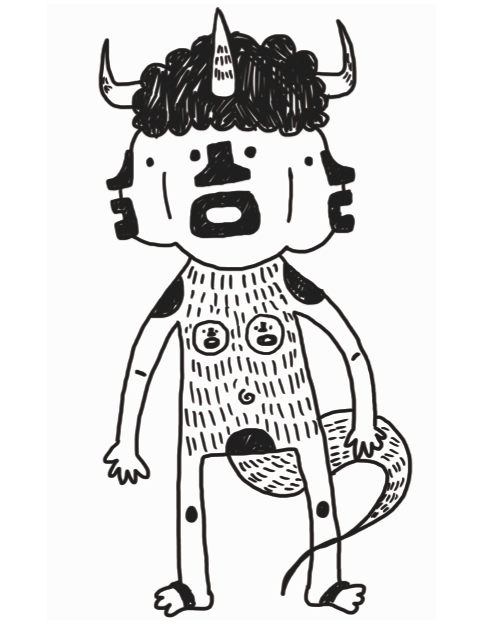The Bunch was born from the idea of creating a character to each mental disorder which a person may be suffering from. Just like us these stuffed toys go through the same problems a human being could have. These can suffer from depression, anxiety, they may suffer from stage fright , another perhaps may be obsessive compulsive or even bipolar.
If these stuffed toys can admit they have a problem maybe this will make us understand that we are not alone.
Bo - Social Anxiety Disorder
Anxiety, everyone has it, it is a basic human condition. Everyone worries about something or everything. This plush toy is the characterization of what Anxiety means to me, how every single thing just goes around and around and around in circles in our minds, not pretty and perfectly drawn circles but circles of nervousness, worry and fear.
His name is Bo, he is afraid of saying something embarrassing, of being in social situations, and heights. He suffers from intense sweating and chest pains. Give him a little time to adjust and he will try and make the best out of his day even though it will scare him a lot.
Serigrafía sobre tela, 2016
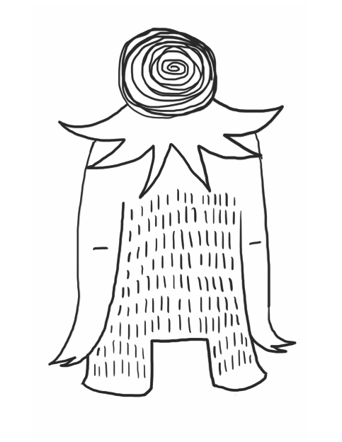The Bunch was born from the idea of creating a character to each mental disorder which a person may be suffering from. Just like us these stuffed toys go through the same problems a human being could have. These can suffer from depression, anxiety, they may suffer from stage fright , another perhaps may be obsessive compulsive or even bipolar.
If these stuffed toys can admit they have a problem maybe this will make us understand that we are not alone.
Illo - Tic Disorders
At some point everyone experiences tic disorders. This movements often affect the eyelids, nose, neck and sometimes other parts of the body as well. Most of the time tics only last instances and are harmless to he person suffering from them.
Illo has the head just like that of a hammer. He can’t stop moving it. Whenever he feels nervous or in an awkward situation he will start blinking his eyes non-stop and jerking his head. One time he even broke down a wall because of this. Never make this little guy uncomfortable because it might hurt.
Serigrafía sobre tela, 2016
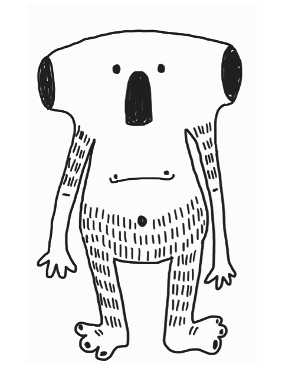The Bunch was born from the idea of creating a character to each mental disorder which a person may be suffering from. Just like us these stuffed toys go through the same problems a human being could have. These can suffer from depression, anxiety, they may suffer from stage fright , another perhaps may be obsessive compulsive or even bipolar.
If these stuffed toys can admit they have a problem maybe this will make us understand that we are not alone.
Lois - Borderline Personality Disorder
Borderline Personality Disorder is a long-term pattern of abnormal behavior characterized by unstable relationships with other people, unstable sense of self, and unstable emotions.
Lois has borderline personality disorder, she is really emotional about everything. Everyone is emotional from time to time but Lois is a little bit more emotional than a lot of people meaning that she has strong emotions but finds it hard to cope with.


Serigrafía sobre tela, 2016
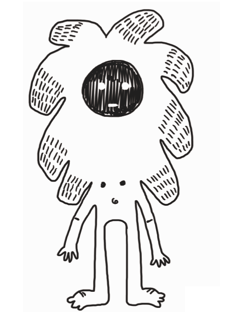The Bunch was born from the idea of creating a character to each mental disorder which a person may be suffering from. Just like us these stuffed toys go through the same problems a human being could have. These can suffer from depression, anxiety, they may suffer from stage fright , another perhaps may be obsessive compulsive or even bipolar.
If these stuffed toys can admit they have a problem maybe this will make us understand that we are not alone.
Lump - Major Depressive Disorder
A constant sense of hopelessness and despair is a sign you may have major depression, also known as clinical depression.
Some people have depression only once in their life, while others have it several times in a lifetime.
For Lump it may be difficult to work, study, sleep, eat, and enjoy friends and activities. Lump was the first in this series of characters, he is the one that started this whole thing.

Serigrafía sobre tela, 2016
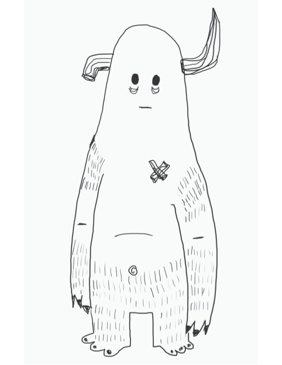The Bunch was born from the idea of creating a character to each mental disorder which a person may be suffering from. Just like us these stuffed toys go through the same problems a human being could have. These can suffer from depression, anxiety, they may suffer from stage fright , another perhaps may be obsessive compulsive or even bipolar.
If these stuffed toys can admit they have a problem maybe this will make us understand that we are not alone.
Nicoma - Relationship Obsessive-Compulsive Disorder
ROCD is when you have obsessive doubts and/or preoccupations regarding a romantic relationship or friendship. It consists in repeatedly thinking if he or she might be the right one, checking ones own feelings as well, comparing your friend or partner to others in terms of characteristics or behavior.
Nicoma suffers from ROCD, she has never had a stable relationship because she is never sure whether her partner loves her or not. She asks herself too everyday whether she does love him or not, in the end the answer is always yes even though the next day she will ask the same question. She is a handful of love.


Serigrafía sobre tela, 2016
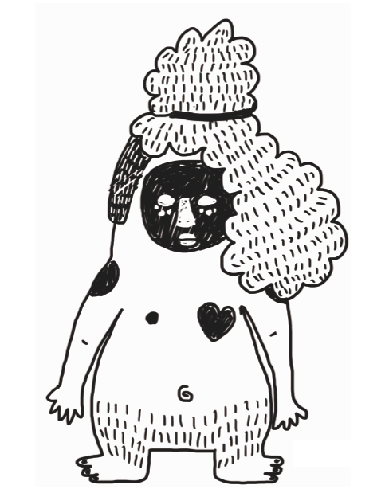The Bunch was born from the idea of creating a character to each mental disorder which a person may be suffering from. Just like us these stuffed toys go through the same problems a human being could have. These can suffer from depression, anxiety, they may suffer from stage fright , another perhaps may be obsessive compulsive or even bipolar.
If these stuffed toys can admit they have a problem maybe this will make us understand that we are not alone.
Ocho - Obsessive-Compulsive Disorder
Obsessive-Compulsive Disorder is a type of mental illness in which a person has severe compulsions and obsessions with the need to repeat them over and over again. These obsessions and compulsions can range from washing your hands every two minutes or to ordering every single colored pencil from longest to smallest as well as from black to yellow. This plush toy is my own personal immortalization of what OCD is to me.
His name is Ocho which means Eight (8) in spanish, an even number, and he has eight white parts. He loves everything that comes in pairs of two. He hates his nose, mouth and belly button because he only has one of each. Every time he goes out he protects his hands, ears, legs and feet just in case they get dirty or catch something.


Serigrafía sobre tela, 2016
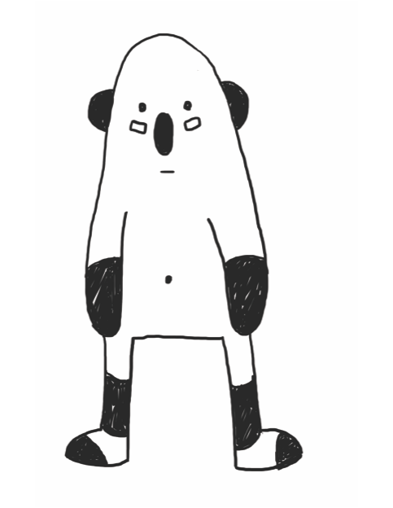The Bunch was born from the idea of creating a character to each mental disorder which a person may be suffering from. Just like us these stuffed toys go through the same problems a human being could have. These can suffer from depression, anxiety, they may suffer from stage fright , another perhaps may be obsessive compulsive or even bipolar.
If these stuffed toys can admit they have a problem maybe this will make us understand that we are not alone.
Otto - Eating Disorders
Eating disorders are actually serious and often fatal illnesses that cause severe disturbances to a person's eating behaviors. Obsessions with food, body weight, and shape may also signal an eating disorder. Common eating disorders include anorexia nervosa, bulimia nervosa, and binge-eating disorder.
Otto frequently consumes unusually large amounts of food and feels unable to stop eating. He even has a spoon on top of his head for every time he sees food.


Serigrafía sobre tela, 2016
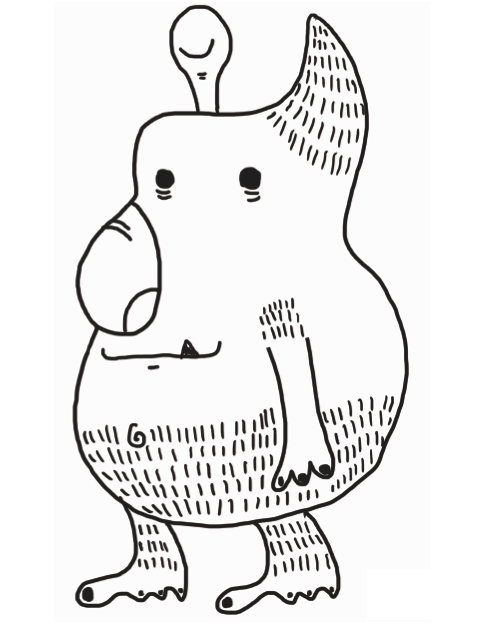The Bunch was born from the idea of creating a character to each mental disorder which a person may be suffering from. Just like us these stuffed toys go through the same problems a human being could have. These can suffer from depression, anxiety, they may suffer from stage fright , another perhaps may be obsessive compulsive or even bipolar.
If these stuffed toys can admit they have a problem maybe this will make us understand that we are not alone.
Rito - ADHD
Attention Deficit Hyperactivity Disorder affects mostly kids and teens, this makes them fidgety and easily distracted. The main symptom of ADHD is being unable to pay attention. It may be hard to listen to someone, follow directions, finish a task or keep track of stuff.
Rito has had ADHD since the age of 2, he gets bored easily and loves jumping on beds. He daydreams a lot, almost every second. He talks a lot and finds it really hard to socialize with quite people or being in quite places. Never give him candy or anything sugary or he might never get off your bed.


Serigrafía sobre tela, 2016
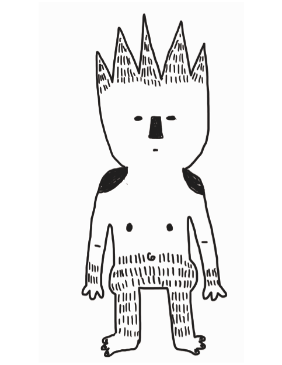The Bunch was born from the idea of creating a character to each mental disorder which a person may be suffering from. Just like us these stuffed toys go through the same problems a human being could have. These can suffer from depression, anxiety, they may suffer from stage fright , another perhaps may be obsessive compulsive or even bipolar.
If these stuffed toys can admit they have a problem maybe this will make us understand that we are not alone.
Rosa - Hypersexual Disorder
Hypersexual Disorder means repetitively engaging in sexual fantasies, urges, and behavior in response to stressful life events.
Rosa's time is consumed by sexual fantasies and urges, and by planning for and engaging in sexual behavior.

Serigrafía sobre tela, 2016
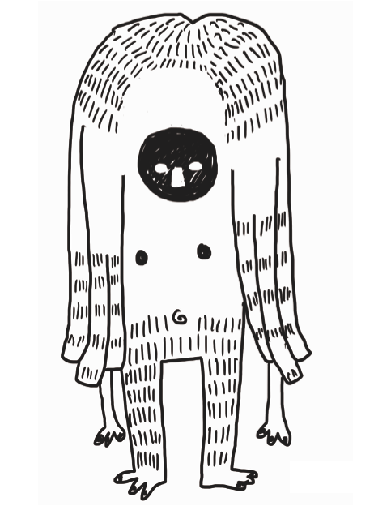The Bunch was born from the idea of creating a character to each mental disorder which a person may be suffering from. Just like us these stuffed toys go through the same problems a human being could have. These can suffer from depression, anxiety, they may suffer from stage fright , another perhaps may be obsessive compulsive or even bipolar.
If these stuffed toys can admit they have a problem maybe this will make us understand that we are not alone.
Umo - Impulse Control Disorder
Impulse Control Disorder is the failure to resist something such as a temptation, urge or impulse. There are different types of impulses and they can be set from drug addiction to Pyromania to Internet Addiction.
His name is Umo, he has become tiny and a little dumb because of all of his different addictions. He is not good at all when it comes to decision making, you can say he goes through a lot of peer pressure and always ends up doing things that can harm him. His body has become his brain which isn't functioning that well and his eyes have gone lifeless. The only good thing is that he does not have a gambling addiction or else he would've even gambled his body away.

Serigrafía sobre tela, 2016
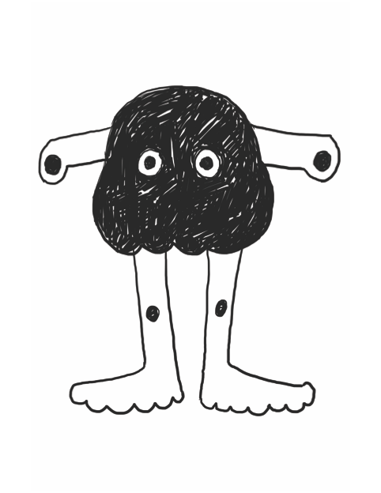